<ion-tabs #tabs (ionTabsDidChange)="selectedTab = tabs.getSelected()">
    <ion-tab-bar slot="bottom">
        <ion-tab-button tab="my-plan">
            
            <ion-label *ngIf="isIos() || isSelected('my-plan')" [@fold] [ngClass]="isIos() ? 'ios-font' : ''">
                My Plan
            </ion-label>
        </ion-tab-button>
        <ion-tab-button tab="plans">
            
            <ion-label *ngIf="isIos() || isSelected('plans')" [@fold] [ngClass]="isIos() ? 'ios-font' : ''">
                Plans
            </ion-label>
        </ion-tab-button>
        <ion-tab-button tab="workouts">
            
            <ion-label *ngIf="isIos() || isSelected('workouts')" [@fold] [ngClass]="isIos() ? 'ios-font' : ''">
                Workouts
            </ion-label>
        </ion-tab-button>
        <ion-tab-button tab="exercises">
            
            <ion-label *ngIf="isIos() || isSelected('exercises')" [@fold] [ngClass]="isIos() ? 'ios-font' : ''">
                Exercises
            </ion-label>
        </ion-tab-button>
        <ion-tab-button tab="profile">
            
            <ion-label *ngIf="isIos() || isSelected('profile')" [@fold] [ngClass]="isIos() ? 'ios-font' : ''">
                Profile
            </ion-label>
        </ion-tab-button>
    </ion-tab-bar>
</ion-tabs>
